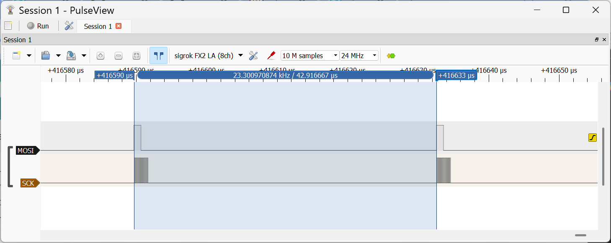
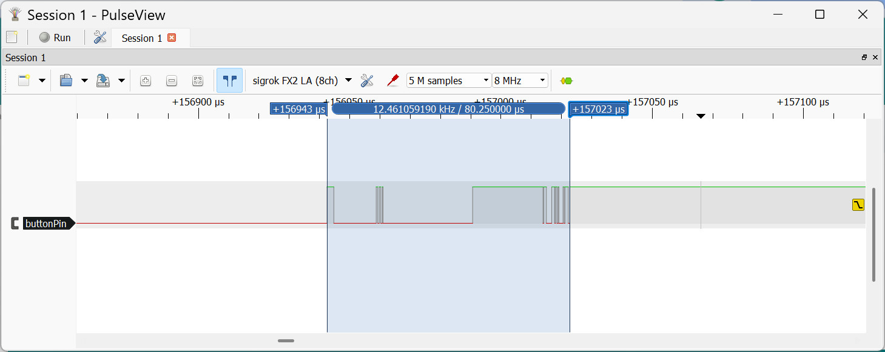
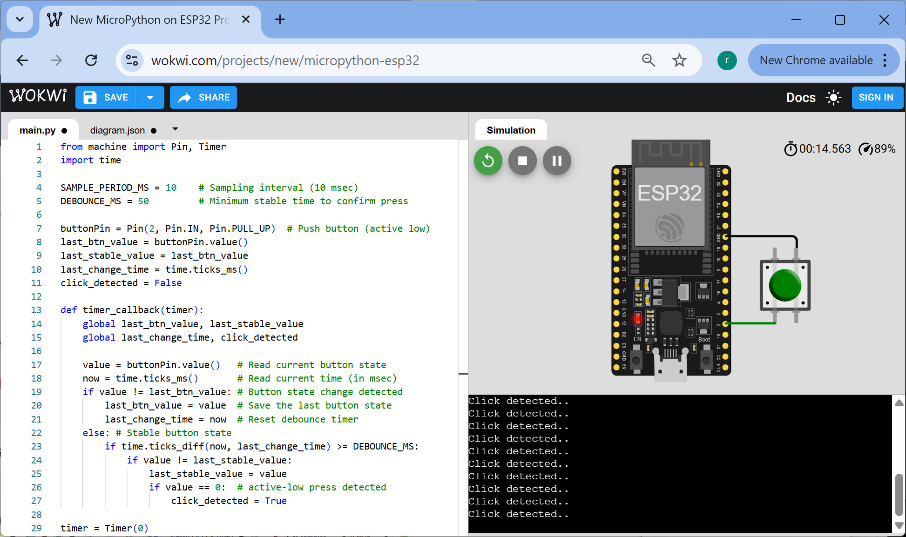

ตัวอย่างการเขียนโค้ด MicroPython สำหรับบอร์ด Espressif ESP32 (ตอนที่ 2)#
Keywords: Python 3, MicroPython, Espressif SoCs, ESP32 / ESP32-S3, Thonny IDE, Arduino Lab for MicroPython, Wokwi
- Example 10: LED Toggle with SPI Interface
- Example 11: LED Toggle with RMT
- Example 12: LED Toggle with PWM
- Example 13: I/O Follower with GPIO Interrupt
- Example 14: Pulse Counting with GPIO Interrupt
- Example 15: Pulse Counting with ESP32 Pulse Counter
- Example 16: Frequency Measurement with GPIO Interrupt
- Example 17: Frequency Measurement with ESP32 PCNT
- Example 18: Button Click Detection with Debounce Logic
- Example 19: Button Click Detection with Input Sampling
- Example 20: Notification from ISR to AsyncIO Function
▷ Example 10: LED Toggle with SPI Interface#
โค้ดตัวอย่างนี้สาธิตการใช้บัส SPI (Serial Peripheral Interface) เพื่อส่งข้อมูลทีละบิตออกไปด้วยอัตราคงที่ และให้เกิดการสลับสถานะลอจิกของ LED โดยปกติ การเชื่อมต่อแบบ SPI จะต้องมีไมโครคอนโทรลเลอร์ทำหน้าที่เป็นอุปกรณ์ SPI Master และมีอุปกรณ์อย่างน้อยหนึ่งตัวทำหน้าที่เป็น SPI Slave ทั้งสองจะสื่อสารกันโดยใช้สัญญาณต่อไปนี้ (4-Wire SPI Bus)
- CS คือสัญญาณ Chip Select
- SCK คือสัญญาณ Serial Clock
- MOSI คือสัญญาณ Master Out Slave In
- MISO คือสัญญาณ Master In Slave Out
แต่ในตัวอย่างนี้ จะใช้เพื่อส่งข้อมูลบิตตามรูปแบบที่กำหนด (เช่น จำนวน 2 ไบต์) โดยไม่ได้ใช้สำหรับการสื่อสารกับอุปกรณ์อื่น และ ไม่มีอุปกรณ์ SPI Slave ข้อมูลบิตจะถูกเลื่อนหรือส่งออกผ่านทางขา MOSI
การกำหนดความถี่ของสัญญาณ SCK สำหรับบัส SPI มีข้อสังเกตดังนี้
- ระบบบัสภายในของ ESP32 สำหรับ I/O Peripherals ทำงานที่ความถี่ 80 MHz ดังนั้น ถ้าใช้วงจร SPI Block โดยเฉพาะ เช่น HSPI/SPI1 หรือ VSPI/SPI2 จะใช้ความถี่ของ SPI Bus ได้สูงสุด 80 MHz แต่ถ้าไม่ได้ใช้ขาสำหรับ SPI โดยตรง (ใช้ผ่าน GPIO Multiplexing หมายถึง เลือกใช้ขา GPIO ทั่วไป ไม่ได้เจาะจงสำหรับ Hardware SPI Pins) ความถี่สูงสุดจะลดลงครึ่งหนึ่ง เหลือไม่เกิน 40 MHz
- ขาของ SPI Block สำหรับ ESP32 ได้แก่
- HSPI (id=1): SCK=14, MOSI=13, MISO=12, CS=15
- VSPI (id=2): SCK=18, MOSI=23, MISO=19, CS=5
- ขาของ ESP32-S3 สำหรับ SPI (มี 4 ชุด คือ SPI0 ~ SPI3)
- SPI0 & SPI1 (GPIO 26~32) จะใช้สำหรับชิป SPI Flash/PSRAM
- SPI2 (HSPI,id=1): SCK=12, MOSI=11, MISO=13, CS=10
- SPI3 (VSPI,id=2): SCK=36, MOSI=35, MISO=37, CS=39
- การใช้งาน SPI บน MicroPython-ESP32 แบ่งได้เป็น 2 แบบ คือ
Hardware SPI ที่ใช้วงจร SPI Block ของ ESP32 โดยตรง และ
SoftSPI (Software/Bit-banged SPI) ที่ควบคุมด้วยซอฟต์แวร์
- รูปแบบแรกรองรับความถี่สูงและมีความแม่นยำกว่า ส่วนรูปแบบที่สองรองรับความถี่ต่ำกว่า และอาจเกิด Clock Jitter (ความไม่สม่ำเสมอของสัญญาณนาฬิกา) ได้ โดยเฉพาะเมื่อมีงานอื่นรันพร้อมกัน
- แต่ในตัวอย่างนี้ หากใช้กับ LED จำเป็นต้องตั้งค่าความถี่ของ SCK ให้ต่ำพอที่จะมองเห็นการกระพริบได้ และสามารถเลือกใช้ SoftSPI ได้
- ในตัวอย่างนี้ ข้อมูลที่จะถูกส่งออกมี 2 ไบต์ หรือ 16 บิต ได้แก่
0xFFและ0x00หมายถึง บิตลอจิก1จำนวน 8 บิต และบิตลอจิก0อีกจำนวน 8 บิต ตามสัญญาณบิตของ SPI หรือกล่าวได้ว่า ไบต์แรกใช้สัญญาณพัลส์ช่วงที่เป็น High และไบต์ที่สองใช้สัญญาณพัลส์ช่วงที่เป็น Low - ถ้าให้ความถี่เท่ากับ 80Hz จะได้สัญญาณเอาต์พุตที่มีความถี่ประมาณ 80Hz / 16 = 5Hz ซึ่งเป็นอัตราการกระพริบของ LED
- โค้ดตัวอย่าง (สำหรับทดลองใช้กับบอร์ด ESP32-S3)
มีการเลือกใช้ SPI (
machine.SPI) และ SoftSPI (machine.SoftSPI) ได้สองกรณี เพื่อเปรียบเทียบกัน- SPI: ทดลองใช้ความถี่ 8 MHz
- SoftSPI: ทดลองใช้ความถี่ 80 Hz
#-------------------------------------------------------------------------
# This script demonstrates how to use SPI / SoftSPI on MicroPython to send
# data continuously using hardware SPI or bit-banged SPI on specified pins.
#-------------------------------------------------------------------------
from machine import Pin, SPI, SoftSPI # Import Pin, SPI and SoftSPI classes
USE_HW_SPI = True # True: use machine.SPI, False: use machine.SoftSPI
# Use GPIO Multiplexing for SPI or VSPI for ESP32-S3
MOSI = Pin(11) # Assign GPIO11 as MOSI pin (used to drive an LED circuit)
SCK = Pin(12) # Assign GPIO12 as SCK pin
MISO = Pin(13) # Assign GPIO13 as MISO pin (not used)
if USE_HW_SPI: # Use Hardware SPI id=1
SCK_FREQ = 8_000_000
spi = SPI(1, baudrate=SCK_FREQ, polarity=0, phase=0,
bits=8, firstbit=SPI.MSB, sck=SCK, mosi=MOSI, miso=MISO )
else: # Use bit-banged SPI (SoftSPI)
SCK_FREQ = 80
spi = SoftSPI(baudrate=SCK_FREQ, polarity=0, phase=0,
bits=8, firstbit=SPI.MSB, sck=SCK, mosi=MOSI, miso=MISO)
data = bytes([0xFF, 0x00])
try:
while True:
# Continuously write two bytes [0x00, 0xFF] over SPI
# Since baudrate is 80Hz, and each transfer sends 16 bits,
# this roughly results in a blink rate of 80/16 = 5Hz
spi.write(data)
except KeyboardInterrupt:
print("Terminated...")
pass
finally:
spi.deinit() # Deinitialize (disable) the SPI interface cleanly
ตัวอย่างการวัดสัญญาณด้วย USB Logic Analyzer มีดังนี้
รูป: ตัวอย่างรูปคลื่นสัญญาณ MOSI และ SCK สำหรับกรณี SoftSPI (80 Hz)

รูป: ตัวอย่างรูปคลื่นสัญญาณ MOSI และ SCK สำหรับกรณี SPI (8 MHz)
▷ Example 11: LED Blink with RMT#
โค้ดนี้สาธิตการใช้งานวงจร RMT (Remote Control) Peripheral ภายในชิป ESP32 / ESP32-S3
และใช้คำสั่งจากคลาส esp32.RMT ของ MicroPython
เพื่อสร้างสัญญาณพัลส์ซ้ำ ๆ สำหรับกระพริบ LED ที่ต่อกับขา GPIO-11 ด้วยความถี่ประมาณ
10Hz โดยไม่ต้องใช้คำสั่งหน่วงเวลา (time.sleep) เพื่อสลับสถานะ LED เอง
#-------------------------------------------------------------------------
# This script uses the ESP32 RMT peripheral to generate
# a repetitive pulse signal to toggle an LED connected to GPIO-11
# at a frequency of about 10Hz.
#-------------------------------------------------------------------------
from machine import Pin # Import Pin class for GPIO control
import time # Import time module for delay functions
import esp32 # Import esp32-specific modules (RMT)
ledPin = Pin(11, Pin.OUT) # Initialize GPIO-11 as an LED output pin
# Create an RMT object on channel 0, outputting pulses on ledPin
# The RMT clock runs at 80 MHz.
# Dividing by 250 slows this down to 320 kHz timer.
# Each pulse length unit corresponds to 1/(80MHz/250) = 3.125 usec.
# High pulse length of 32000 correspond to ~100 ms.
CLK_DIV = 250
rmt = esp32.RMT(id=0, pin=ledPin, clock_div=CLK_DIV)
rmt.loop(True) # Enable continuous looping of pulses
# Write pulses to RMT:
# The list [32000, 32000] specifies the pulse widths (in timer ticks)
# for low and high signals.
# The second parameter '0' means the pulses start with the low signal.
rmt.write_pulses([32000, 32000], 0)
try:
while True: # The main loop (do nothing)
time.sleep(1)
except KeyboardInterrupt:
print("Terminated...")
finally:
rmt.loop(False) # Disable pulse looping (stop repeating pulses)
rmt.deinit() # Deinitialize the RMT peripheral to free resources
วงจร RMT จะถูกตั้งค่าให้แบ่งความถี่สัญญาณนาฬิกาภายในจาก 80 MHz ลงมาเป็น 320 kHz เมื่อใช้ตัวหารความถี่เท่ากับ 256 ทำให้หนึ่งหน่วยความยาวพัลส์มีค่า 3.125 µsec จากนั้นกำหนดความยาวพัลส์ 32000 หน่วย สำหรับสถานะ Low และ High อย่างละหนึ่งช่วง (ความกว้างพัลส์ประมาณ 100 msec และคาบเวลาของสัญญาณเอาต์พุตประมาณ 200 msec) ทำให้ LED กระพริบอัตโนมัติจนกว่า จะหยุดโปรแกรม หรือปิดการทำงานของ RMT
การคำนวณหาความกว้างของสัญญาณพัลส์ มีดังนี้
ตัวอย่างการวัดสัญญาณด้วย USB Logic Analyzer มีดังนี้
รูป: ตัวอย่างรูปคลื่นสัญญาณ GPIO-11 (เมื่อใช้ค่า CLK_DIV = 250)
วัดความกว้างของพัลส์ได้ 100 msec
รูป: ตัวอย่างรูปคลื่นสัญญาณ GPIO-11 (เมื่อใช้ค่า CLK_DIV = 1)
วัดความกว้างของพัลส์ได้ 400 usec
▷ Example 12: LED Blink with PWM#
โค้ดนี้สาธิตการใช้งานวงจร LEDC ของ ESP32 / ESP32-S3 และใช้คำสั่งจากคลาส machine.PWM
ของ MicroPython เพื่อสร้างสัญญาณ PWM (Pulse Width Modulation) ซึ่งเป็นสัญญาณดิจิทัลที่มีคาบ
(Periodic Signal) สามารถนำมาใช้ เพื่อทำให้ LED กระพริบได้
โดยตั้งค่า Duty Cycle เท่ากับ 50% แต่จะต้องใช้ความถี่ไม่สูงมากนัก
ในกรณีของ ESP32-S3 ความถี่ PWM ต่ำสุดที่ฮาร์ดแวร์รองรับได้อยู่ที่ประมาณ 10 Hz
ดังนั้นหากต้องการความถี่ต่ำกว่านี้ ต้องใช้วิธีสร้างสัญญาณด้วยซอฟต์แวร์แทน
#--------------------------------------------------------------
# Example: Generate the lowest-frequency PWM on a selected pin
# to blink an LED continuously.
#--------------------------------------------------------------
from machine import Pin, PWM
import time
# Define the LED pin (e.g. GPIO-11)
led_pin = Pin(11, Pin.OUT)
# Create PWM object
# duty_u16=32768 sets 50% duty cycle (for 16-bit range: 0..65535)
FREQ = 10 # lowest PWM frequency for ESP32-S3
DUTY_MAX = 65535
pwm = PWM(led_pin, freq=FREQ, duty_u16=65535)
pwm.duty_u16( (DUTY_MAX+1) // 2 ) # Set the duty cycle to 50%
try:
while True: # The main loop
time.sleep(1)
except KeyboardInterrupt:
print("Terminated...")
finally:
pwm.deinit() # Stop PWM and release the pin
ตัวอย่างการวัดสัญญาณด้วย USB Logic Analyzer มีดังนี้

รูป: ตัวอย่างรูปคลื่นสัญญาณ GPIO-11 วัดความกว้างพัลส์ได้ 50 msec และคาบเท่ากับ 100 msec (10Hz)
▷ Example 13: I/O Follower with GPIO Interrupt#
โค้ดตัวอย่างนี้สร้างสัญญาณ PWM เป็นเอาต์พุตที่ขา GPIO-13 สัญญาณนี้ จะต้องนำไปเชื่อมต่อด้วยสายไฟจาก GPIO-13 ไปยัง GPIO-11 เพื่อใช้เป็นสัญญาณอินพุตสำหรับการทดสอบ
GPIO-11 ถูกตั้งค่าให้เป็นอินพุตและเปิดใช้งานอินเทอร์รัพท์ (Interrupt)
ที่เกิดขึ้นทั้งขอบขาขึ้นและขอบขาลงของสัญญาณ
เมื่อเกิดอินเทอร์รัพท์ ฟังก์ชัน ISR ที่กำหนดไว้ (irq_handler)
จะอ่านสถานะ จาก GPIO-11 แล้วนำไปตั้งค่าขา GPIO-12 ให้มีค่าเหมือนกับอินพุตแบบเรียลไทม์
#--------------------------------------------------------------
# This script generates a PWM test signal on GPIO-13.
# The signal is looped back to GPIO-11 by connecting a wire
# between GPIO-13 and GPIO-11.
# GPIO-11 is configured as an input with an external interrupt
# that triggers on both rising and falling edges.
# In the interrupt service routine (ISR), the state of GPIO-11
# is read and used to update the output level of GPIO-12
# in real time.
#--------------------------------------------------------------
from machine import Pin, PWM
import time
# Generate a test pulse (PWM) signal
pwmPin = Pin(13, Pin.OUT)
pwm = PWM(pwmPin)
pwm.freq(10_000) # Set PWM frequency to 10 kHz
pwm.duty_u16(32768) # 50% duty cycle (16-bit scale)
# PulseIn pin
pulseOutPin = Pin(12, Pin.OUT)
def irq_handler(pin): # GPIO interrupt handler (callback)
global pulseOutPin
pulseOutPin.value(pin.value())
# PulseOut pin
pulseInPin = Pin(11, Pin.IN, Pin.PULL_UP)
pulseInPin.irq(trigger=Pin.IRQ_RISING | Pin.IRQ_FALLING,
handler=irq_handler)
try:
while True: # Main loop
time.sleep(1)
except KeyboardInterrupt:
print("Terminated...")
finally:
pwm.deinit()
ตัวอย่างการวัดสัญญาณด้วย USB Logic Analyzer มีดังนี้


รูป: การวัดสัญญาณที่ขา GPIO-11 & GPIO-12
จากรูปคลื่นสัญญาณจะเห็นได้ว่า สัญญาณอินพุตที่ขา GPIO-11 เป็นสัญญาณพัลส์ที่มีความถี่ 10kHz และสัญญาณเอาต์พุตที่ขา GPIO-12 ตอบสนองต่อเหตุการณ์ขอบขาขึ้นหรือขาลงของสัญญาณอินพุต เมื่อเกิดขอบขาขึ้นหรือขาลงบนสัญญาณอินพุต จะมีระยะเวลาตอบสนองสำหรับสัญญาณเอาต์พุต (16 ~ 22 usec โดยประมาณ) ระยะเวลาดังกล่าวประกอบด้วยสองส่วนคือ Interrupt Latency และการเขียนค่าเพื่ออัปเดตเอาต์พุตในฟังก์ชัน ISR และมีผลต่อความถี่สูงสุดของสัญญาณอินพุตที่สามารถตอบสนองได้ทัน
▷ Example 14: Pulse Counting with GPIO Interrupt#
โค้ดนี้สาธิตการใช้วงจร RMT ของ ESP32 เพื่อสร้างสัญญาณพัลส์ออกที่ขา GPIO-13 โดยสัญญาณจะมีพัลส์ระดับสูงคงที่ 50 ไมโครวินาที และพัลส์ระดับต่ำที่มีความกว้างสุ่มในช่วง 50 ถึง 200 ไมโครวินาที
สัญญาณเอาต์พุตที่ขา GPIO-13 จะถูกเชื่อมต่อกลับเข้ามายังขา GPIO-11 เป็นอินพุต และมีการเปิดใช้งานอินเทอร์รัพท์ เพื่อจับการเปลี่ยนแปลงของสัญญาณที่ขาอินพุตในขอบขาขึ้น ทุกครั้งที่มีขอบขาขึ้น ฟังก์ชันขัดจังหวะจะเพิ่มตัวนับพัลส์ จำนวนพัลส์ที่ตรวจจับได้จะแสดงผลหลังจากส่งสัญญาณพัลส์แต่ละครั้ง
#--------------------------------------------------------------
# This script generates a variable pulse pattern using
# the ESP32 RMT peripheral on GPIO-13 and counts the number of
# rising pulses detected on GPIO-11 using an interrupt handler.
# The output pulse pattern consists of fixed 50 µs high pulses
# and random low pulse widths between 50 and 200 µs.
# GPIO-13 (RMT output) should be connected physically to
# GPIO-11 (input) for pulse counting.
#--------------------------------------------------------------
from machine import Pin
from esp32 import RMT
import time
import random
pulseInPin = Pin(11, Pin.IN, Pin.PULL_UP)
pulseOutPin = Pin(13, Pin.OUT)
pulse_count = 0 # store the number of detected pulses
def irq_handler(pin):
global pulse_count
pulse_count += 1
# Enable interrupt on pulseInPin for rising edge triggers,
# calling irq_handler each time a rising edge is detected
irq = pulseInPin.irq(trigger=Pin.IRQ_RISING, handler=irq_handler)
# Create an RWM object, 1usec resolution
CLK_DIV = 80 # 1 MHz tick (1us per tick), 80 MHz/80
rmt = RMT(id=0, pin=pulseOutPin, clock_div=CLK_DIV)
rmt.loop(False)
# Pattern: [high_us, low_us, high_us, low_us, ...]
# This example: 10 pulses with different spacing
NUM_PULSES = 10
pattern_us = []
for i in range(NUM_PULSES):
high_time = 50 # fixed high pulse width = 50usec
low_time = random.randint(50, 200)
pattern_us.extend([high_time, low_time])
# Convert microseconds to RMT ticks (1 tick = 1us here)
pattern_ticks = [t for t in pattern_us]
try:
while True:
print("Sending RMT pulse pattern...")
pulse_count = 0 # Clear pulse counter
rmt.write_pulses(pattern_ticks, 1) # Start with HIGH level
time.sleep_ms(10) # Wait for pulses to complete
print(f"Number of Pulses detected: {pulse_count}\n")
time.sleep(5)
except KeyboardInterrupt:
print("Terminated...")
finally:
rmt.deinit()
▷ Example 15: Pulse Counting with ESP32 Pulse Counter#
โค้ดตัวอย่างต่อไปนี้สาธิตการใช้งานวงจร PCNT (Pulse Counter) ภายใน ESP32 สำหรับการนับจำนวนพัลส์ที่เกิดขึ้น แทนการใช้อินเทอร์รัพท์และฟังก์ชัน Callback
#--------------------------------------------------------------
# This script generates a variable pulse pattern using
# the ESP32 RMT peripheral on GPIO-13 and counts the number
# of rising pulses detected on GPIO-11 using one of the
# pulse counter units inside the ESP32.
# The output pulse pattern consists of fixed 5 µs high pulses
# and random low pulse widths between 5 and 20 µs.
# GPIO-13 (RMT output) should be connected physically to
# GPIO-11 (input) for pulse counting.
#--------------------------------------------------------------
from machine import Pin
from esp32 import RMT, PCNT
import time
import random
pulseInPin = Pin(11, Pin.IN, Pin.PULL_UP)
pulseOutPin = Pin(13, Pin.OUT)
# Create an RWM object, 1usec resolution
CLK_DIV = 80 # 1 MHz tick (1us per tick), 80 MHz/80
rmt = RMT(id=0, pin=pulseOutPin, clock_div=CLK_DIV)
rmt.loop(False)
# Pattern: [high_us, low_us, high_us, low_us, ...]
# This example: 10 pulses with different spacing
NUM_PULSES = 10
pattern_us = []
for i in range(NUM_PULSES):
high_time = 5
low_time = random.randint(5, 20)
pattern_us.extend([high_time, low_time])
# Convert microseconds to RMT ticks (1 tick = 1us here)
pattern_ticks = [t for t in pattern_us]
pcnt = PCNT(0, pin=pulseInPin)
# Increment the pulse counter on rising edges
# Pulse width filtering: 80 => 1usec minimum pulse width
pcnt.init(pin=pulseInPin, rising=PCNT.INCREMENT, falling=PCNT.IGNORE, filter=80)
pcnt.start() # Start the pulse counter
try:
while True:
print("Sending RMT pulse pattern...")
pcnt.value(0) # Reset the pulse counter
rmt.write_pulses(pattern_ticks, 1) # Start with HIGH level
time.sleep_ms(10) # Wait for pulses to complete
print(f"Number of Pulses detected: {pcnt.value()}\n")
time.sleep(5)
except KeyboardInterrupt:
print("Terminated...")
finally:
rmt.deinit()
pcnt.deinit()
ตัวอย่างการวัดสัญญาณด้วย USB Logic Analyzer มีดังนี้
รูป: สัญญาณอินพุตที่ขา GPIO-11 นับจำนวนพัลส์ได้ 10 ครั้ง มีความกว้างช่วงที่เป็น High เท่ากับ 5 usec
▷ Example 16: Frequency Measurement with GPIO Interrupt#
โค้ดนี้ใช้สำหรับวัดความถี่ของสัญญาณ PWM โดยการนับจำนวนขอบขาขึ้น ที่ตรวจจับได้ภายในช่วงเวลาที่กำหนด มีการใช้ตัวจับเวลา (Hrdware Timer) ที่ตั้งค่าให้ทำงานแบบเป็นรอบ (Periodic Mode) เพื่อกำหนดช่วงเวลาการวัด เมื่อถึงเวลาที่ตั้งไว้ ตัวจับเวลาจะทำหน้าที่ บันทึกจำนวนพัลส์ที่นับได้ในช่วงเวลาก่อนหน้าและรีเซ็ตตัวนับพัลส์เพื่อเริ่มนับใหม่สำหรับรอบถัดไป
ในตัวอย่างนี้ มีการสร้างสัญญาณ PWM บนขา GPIO-13 เพื่อใช้เป็นสัญญาณทดสอบ และนำไปป้อนกลับเข้าสู่ขา GPIO-11 ซึ่งใช้สำหรับวัดสัญญาณ และมีการสร้างฟังก์ชัน IRQ handler สำหรับ GPIO Interrupt ซึ่งจะทำการเพิ่มตัวนับทุกครั้งที่ตรวจจับขอบขาขึ้นของสัญญาณที่ขา GPIO-11
#--------------------------------------------------------------
# This script measures the frequency of a PWM signal by counting
# the number of rising edges detected within a fixed time window.
#
# A hardware timer is configured in periodic mode to define the
# measurement interval. On each timer tick:
# - The current pulse count is saved.
# - The counter is reset for the next measurement cycle.
#
# In this example:
# - A PWM signal is generated on GPIO-13 (test signal).
# - The PWM output is looped back to GPIO-11 (measurement input).
# - An IRQ handler increments the counter on each rising edge.
# - The measured frequency is calculated and compared to the
# set PWM frequency.
# Requirements:
# - Connect GPIO-13 to GPIO-11 for loopback measurement.
# - Tested with MicroPython on an ESP32 / ESP32-S3.
#--------------------------------------------------------------
import uasyncio as asyncio
from machine import Pin, PWM, Timer
import time
done = False
pulse_count = 0
saved_pulse_count = 0
timer_period_ms = 20 # Set the measurement interval (msec)
# Interrupt handler for rising edge detection
def irq_handler(pin):
global pulse_count, done
if not done: # if pulse counting is enabled
pulse_count += 1
# Input pin for measuring signal
pulseInPin = Pin(11, Pin.IN, Pin.PULL_UP)
# Set up the input pin with pull-down and attach IRQ
pulseInPin.irq(trigger=Pin.IRQ_RISING, handler=irq_handler)
# Generate a test PWM signal on GPIO-13
# Connect GPIO-13 to GPIO-11 for testing
pwmOutPin = Pin(13, Pin.OUT)
pwm = PWM(pwmOutPin)
pwm.duty_u16(32768) # 50% duty cycle
pwm.freq(1000) # 1kHz (default)
# Timer callback
def timer_callback(timer):
global pulse_count, saved_pulse_count, done
saved_pulse_count = pulse_count
pulse_count = 0
done = not done
# Create periodic timer
timer = Timer(0)
timer.init(period=timer_period_ms,
mode=Timer.PERIODIC,
callback=timer_callback)
# Main async. function
async def main():
global pwm, saved_pulse_count, timer_period_ms, done
test_frequencies = [100, 200, 1_000, 5_000, 10_000, 20_000]
print( "\nFrequency measurement")
while True:
print(50*"-")
for f in test_frequencies:
pwm.freq( f ) # Set the PWM frequency
await asyncio.sleep_ms(2*timer_period_ms)
while not done:
await asyncio.sleep_ms(5)
freq = 1000.0 * saved_pulse_count / timer_period_ms
print(f"Frequency [Hz]: {f:.1f} set, {freq:.1f} measured")
await asyncio.sleep(1) # wait before next measurement
try:
asyncio.run(main())
except KeyboardInterrupt:
print("Terminated...")
finally:
pwm.deinit()
timer.deinit()

รูป: การสาธิตการทำงานของโค้ดตัวอย่างโดยใช้ Arduino Lab for MicroPython โดยมีการสร้างสัญญาณทดสอบที่มีความถี่แตกต่างกัน ตั้งแต่ 100 Hz จนถึง 20 kHz
ตัวอย่างการวัดสัญญาณด้วย USB Logic Analyzer มีดังนี้
รูป: สัญญาณทดสอบความถี่ 100 Hz
รูป: สัญญาณทดสอบความถี่ 20 kHz
หากจำลองการทำงานด้วย Wokwi Simulator ก็สามารถวัดความถี่ของสัญญาณทดสอบเสมือนจริงได้ ในรูปเป็นการทดสอบกับบอร์ด ESP32 และมีการเลือกใช้ขา GPIO-12 เป็นอินพุต และเชื่อมต่อกับขา เอาต์พุต GPIO-13 แต่มีข้อสังเกตว่า ค่าความถี่วัดได้ถูกต้องสำหรับความถี่ต่ำ แต่หากใช้ความถี่สูง เช่น 5000 Hz หรือมากกว่า จะวัดค่าได้ไม่ถูกต้อง
รูป: การจำลองการทำงานด้วย Wokwi Simulator โดยใช้บอร์ด ESP32 DevKit-C
▷ Example 17: Frequency Measurement with ESP32 PCNT#
โค้ดนี้เป็นตัวอย่างการวัดความถี่ของสัญญาณ PWM ด้วยการใช้วงจร PCNT (Pulse Counter) ของ ESP32 นับจำนวนพัลส์ที่เกิดขึ้นในช่วงเวลาที่กำหนด โดยมีการทำงานหลักดังนี้:
- สร้างสัญญาณ PWM ออกที่ขา GPIO13 เพื่อใช้เป็นสัญญาณทดสอบ
- ใช้วงจร PCNT สำหรับสัญญาณอินพุตที่ขา GPIO-11 นับจำนวนขอบขาขึ้นของสัญญาณ PWM
- ตั้งค่าตัวจับเวลาฮาร์ดแวร์ให้ทำงานแบบเป็นรอบ (Periodic) เช่น ทุก 20 มิลลิวินาที เพื่อเรียกใช้ฟังก์ชันวัดความถี่
- สร้างฟังก์ชันเพื่ออ่านค่าจำนวนพัลส์ที่นับได้ ในช่วงเวลาก่อนหน้า แล้วรีเซ็ตตัวนับพัลส์สำหรับรอบถัดไป
- ใช้ตัวแปร
doneเพื่อสลับสถานะการอ่านและรีเซ็ตตัวนับพัลส์ - ในลูปหลักจะตั้งค่าความถี่ PWM ให้เปลี่ยนไปตามรายการทดสอบ และแสดงผลความถี่ที่วัดได้เปรียบเทียบกับค่าที่ตั้งไว้
#--------------------------------------------------------------
# This script measures the frequency of a PWM signal by using
# the PCNT block inside the ESP32 to count the number of
# rising edges detected within a fixed time window.
# Note that he ESP32 PCNT hardware uses a 16-bit signed counter
# internally. This means the counter max is +32767.
#--------------------------------------------------------------
import uasyncio as asyncio
from machine import Pin, PWM, Timer
from esp32 import PCNT
import time
# Global variables
done = False
saved_pulse_count = 0
# Setup PWM output
pwmOutPin = Pin(13, Pin.OUT)
pwm = PWM(pwmOutPin)
pwm.duty_u16(32768) # 50% duty cycle
pwm.freq(1000) # 1 kHz test PWM (default)
# Setup PCNT (Pulse Counter) on GPIO11 to count pulses from PWM
pulseInPin = Pin(11, Pin.IN, pull=Pin.PULL_UP)
# Create pulse counter on PCNT unit 0
pcnt = PCNT(0, pulseInPin)
pcnt.init(pin=pulseInPin,rising=PCNT.INCREMENT, falling=PCNT.IGNORE, filter=10)
pcnt.start() # Start pulse counting
def measure_freq(timer):
global pcnt, saved_pulse_count, done
if not done:
# Read current pulse count from PCNT
saved_pulse_count = pcnt.value()
else:
# Clear PCNT value
pcnt.value(0)
done = not done
# Setup a periodic timer to measure frequency
timer_period_ms = 20 # msec
timer = Timer(0)
timer.init(period=timer_period_ms,
mode=Timer.PERIODIC,
callback=measure_freq)
def format_freq(freq):
if freq >= 1_000_000:
return "{:6.2f} MHz".format(freq / 1_000_000)
elif freq >= 1_000:
return "{:6.2f} kHz".format(freq / 1_000)
else:
return "{:6.2f} Hz".format(freq)
# Main async. function
async def main():
global saved_pulse_count, timer_period_ms, done
test_frequencies = [100, 500, 1_000, 5_000, 10_000, 50_000, 1_000_000]
print( "\nFrequency measurement")
while True:
print(50*"-")
for f in test_frequencies:
pwm.freq( f ) # Set the PWM frequency
await asyncio.sleep_ms(2*timer_period_ms)
while not done:
await asyncio.sleep_ms(5)
freq = 1000.0 * saved_pulse_count / timer_period_ms
f_measured = format_freq(freq)
f_set = format_freq(f)
print(f"Frequency: {f_set} set, {f_measured} measured")
await asyncio.sleep(1) # wait before next measurement
try:
asyncio.run(main())
except KeyboardInterrupt:
print("Terminated...")
finally:
pwm.deinit()
pcnt.deinit()
timer.deinit()

รูป: การสาธิตการทำงานของโค้ดตัวอย่างโดยใช้ Arduino Lab for MicroPython โดยมีการสร้างสัญญาณทดสอบที่มีความถี่แตกต่างกัน ตั้งแต่ 100 Hz จนถึง 1 MHz
▷ Example 18: Button Click Detection with Debounce Logic#
โค้ดนี้แสดงตัวอย่างการใช้ Hardware Timer ของ ESP32 ในการอ่านค่าจากปุ่มกด (Push Button) เช่น ทุก ๆ 10 มิลลิวินาที (10 msec) เมื่อเกิดอินเทอร์รัปต์จากวงจร Timer ฟังก์ชัน Timer Callback จะทำการตรวจสอบการเปลี่ยนแปลงสถานะของปุ่มกด พร้อมกับจับเวลาสำหรับสถานะลอจิก Low ที่คงที่ อย่างน้อย 50 msec เพื่อกรองสัญญาณเด้ง (Bouncing) ที่เกิดขึ้นทั้งช่วงกดและปล่อยปุ่ม ซึ่งช่วยให้การตรวจจับการกดปุ่มมีความแม่นยำและถูกต้องมากขึ้น
from machine import Pin, Timer
import time
SAMPLE_PERIOD_MS = 10 # Sampling interval (10 msec)
DEBOUNCE_MS = 50 # Minimum stable time to confirm press
buttonPin = Pin(2, Pin.IN, Pin.PULL_UP) # Push button (active low)
last_btn_value = buttonPin.value()
last_stable_value = last_btn_value
last_change_time = time.ticks_ms()
click_detected = False
def timer_callback(timer):
global last_btn_value, last_stable_value
global last_change_time, click_detected
value = buttonPin.value() # Read current button state
now = time.ticks_ms() # Read current time (in msec)
if value != last_btn_value: # Button state change detected
last_btn_value = value # Save the last button state
last_change_time = now # Reset debounce timer
else: # Stable button state
if time.ticks_diff(now, last_change_time) >= DEBOUNCE_MS:
if value != last_stable_value:
last_stable_value = value
if value == 0: # active-low press detected
click_detected = True
timer = Timer(0)
timer.init(period=SAMPLE_PERIOD_MS,
mode=Timer.PERIODIC,
callback=timer_callback)
try:
while True: # Main loop
if click_detected:
click_detected = False # Reset for next press
print("Click detected..")
time.sleep(0.01)
except KeyboardInterrupt:
print("Terminated...")
finally:
timer.deinit()
ตัวอย่างการวัดสัญญาณด้วย USB Logic Analyzer มีดังนี้
รูป: การวัดสัญญาณจากวงจรปุ่มกดภายนอกเมื่อมีการกดปุ่มหนึ่งครั้ง (วัดความกว้างช่วง Low ได้ประมาณ 59.3 msec)
รูป: การวัดสัญญาณจากวงจรปุ่มกดภายนอกเมื่อมีการกดปุ่มหนึ่งครั้ง (วัดความกว้างช่วง Low ได้ประมาณ 31.9 msec)

รูป: ช่วงเวลาที่มีการกระเด้งของปุ่มกดเมื่อมีการปล่อยปุ่มแล้ว

รูป: ตัวอย่างการทดสอบโค้ดโดยใช้ Wokwi Simulator แบบเสมือนจริง
รูป: ตัวอย่างการทดสอบโค้ดโดยใช้บอร์ด ESP32-S3
▷ Example 19: Button Click Detection with Input Sampling#
โค้ดนี้ใช้เทคนิคเพื่ออ่านค่าอินพุตด้วยอัตราคงที่ (Input Sampling) เช่น ทุก ๆ 10 มิลลิวินาที แล้วเก็บค่าบิตไว้ในตัวแปร โดยเลื่อนบิตเข้าทาง LSB (Left-Shift Register) แต่จำกัดไว้ไม่เกิน 8 บิต จากนั้นใช้ค่าของตัวแปรนี้ตรวจหาลำดับบิตที่บ่งบอกว่าปุ่มกดหรือปล่อยจริง ทำให้สามารถกรองสัญญาณเด้ง (Bounce) และตรวจจับการคลิกได้โดยไม่ต้องหน่วงเวลาในหลักโปรแกรม
ปุ่มกดภายนอกทำงานแบบ Active-Low ดังนั้น ถ้ายังไม่มีการกดปุ่ม ค่าของตัวแปรจะเป็น 0b11111111
หรือ 0xFF และถ้ามีการกดปุ่ม ค่าบิตบางตำแหน่งจะเริ่มเปลี่ยนเป็น 0 แต่ถ้าปล่อยปุ่มจะเปลี่ยนกลับเป็น 1
การตรวจสอบขอบสัญญาณอินพุตจะเป็นไปตามเงื่อนไข:
0xF0หมายถึง ขอบขาลง ซึ่งหมายความว่า สัญญาณจะต้องเปลี่ยนเป็น0ต่อเนื่องกัน 4 บิต (เท่ากับ 4 x 10 = 40 msec)0x0Fหมายถึง ขอบขาขึ้น ซึ่งหมายความว่า สัญญาณจะต้องเปลี่ยนเป็น1ต่อเนื่องกัน 4 บิต (เท่ากับ 4 x 10 = 40 msec)
#--------------------------------------------------------------
# This example implements button click detection by periodically
# sampling the button input using a hardware timer of the ESP32.
# A 8-bit shift register is used to debounce the button signal
# by tracking recent samples to detect stable press and
# release patterns.
# The timer ISR updates the sample state and sets a flag when
# a click is detected, allowing the main loop to respond
# asynchronously without blocking or excessive polling.
#--------------------------------------------------------------
from machine import Pin, Timer
import time
SAMPLE_PERIOD_MS = 10 # Sampling interval
buttonPin = Pin(2, Pin.IN, Pin.PULL_UP) # Push button (active low)
saved_value = 0xFF
state = 0
click_detected = False
def timer_callback(timer):
global state, saved_value, click_detected
saved_value = ((saved_value << 1) | int(buttonPin.value())) & 0xFF
if saved_value == 0xF0 and state == 0: # Button pressed
state = 1
click_detected = False
elif saved_value == 0x0F and state == 1: # Button released
state = 0
click_detected = True
elif saved_value == 0xFF:
state = 0
timer = Timer(0)
timer.init(period=SAMPLE_PERIOD_MS,
mode=Timer.PERIODIC,
callback=timer_callback)
try:
clicks = 0 # Total click count
while True: # Main loop
if click_detected:
clicks += 1
click_detected = False # Reset for next press
print(f"Click detected.. total clicks: {clicks}")
time.sleep(0.01)
except KeyboardInterrupt:
print("Terminated...")
finally:
timer.deinit()

รูป: ตัวอย่างการทดสอบโค้ดโดยใช้ Wokwi Simulator แบบเสมือนจริง
▷ Example 20: Notification from ISR to AsyncIO Function#
ตัวอย่างนี้ใช้วงจร Hardware Timer ของ ESP32 เพื่อสลับสถานะขาออก pinA
ภายในฟังก์ชัน ISR (Timer Callback)ทุก ๆ 1 มิลลิวินาที พร้อมกับตั้งค่า
ThreadSafeFlag เพื่อแจ้งเตือนไปยังลูปหลักซึ่งรอรับสัญญาณและสลับสถานะขาออก pinB
#--------------------------------------------------------------
# This example uses a hardware timer on the ESP32 to toggle
# one output pin (pinA) inside the timer ISR every 1 ms.
# The ISR also sets a ThreadSafeFlag to notify the asynchronous
# main loop, which toggles a second output pin (pinB)
# each time it receives the notification.
#--------------------------------------------------------------
import uasyncio as asyncio
from uasyncio import ThreadSafeFlag
from machine import Pin, Timer
pinA = Pin(12, Pin.OUT)
pinB = Pin(11, Pin.OUT)
pinA.off()
pinB.off()
# Create the flag for notification from ISR to async. function
flag = ThreadSafeFlag()
# Timer callback (ISR)
def timer_callback(timer):
pinA.toggle() # Toggle pin A
flag.set() # Notify main loop
timer = Timer(0)
timer.init(period=1, mode=Timer.PERIODIC, callback=timer_callback)
async def main():
while True:
await flag.wait() # Wait until timer ISR sets the flag
pinB.toggle() # Toggle pin B
try:
asyncio.run(main())
except KeyboardInterrupt:
print("Terminated...")
finally:
timer.deinit()
ตัวอย่างการวัดสัญญาณด้วย USB Logic Analyzer มีดังนี้

รูป: การวัดสัญญาณ pinA กับ pinB และวัดระยะเวลาในการตอบสนอง
เมื่อฟังก์ชัน main() ได้รับการแจ้งเตือนจากฟังก์ชัน ISR ในแต่ละครั้ง
(วัดระยะเวลาตอบสนองได้ประมาณ 90 usec)
▷ กล่าวสรุป#
บทความนี้ได้นำเสนอเนื้อหาตอนที่ 2 ที่มีตัวอย่างการเขียนโค้ด เพื่อใช้งาน GPIO (ดิจิทัล) ของ ESP32 เบื้องต้น เช่น การใช้งาน LED เป็นเอาต์พุต และการใช้ปุ่มกดแบบ Push Button เป็นอินพุต ได้มีการนำเสนอและเปรียบเทียบรูปแบบการเขียนโค้ดที่แตกต่างกันสำหรับการใช้คำสั่ง หรือไลบรารีต่าง ๆ ของ MicroPython และมีตัวอย่างการวัดสัญญาณด้วย USB Logic Analyzer เพื่อศึกษาพฤติกรรมการทำงานของโค้ด MicroPython และช่วยให้เข้าใจหลักการทำงานของ MicroPython สำหรับ ESP32 / ESP32-S3 ได้ดีขึ้น
บทความถัดไป: "ตัวอย่างการเขียนโค้ด MicroPython สำหรับบอร์ด Espressif ESP32 (ตอนที่ 3)
This work is licensed under a Creative Commons Attribution-ShareAlike 4.0 International License.
Created: 2025-08-12 | Last Updated: 2025-08-14